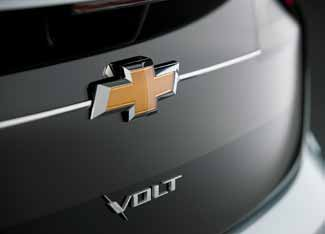
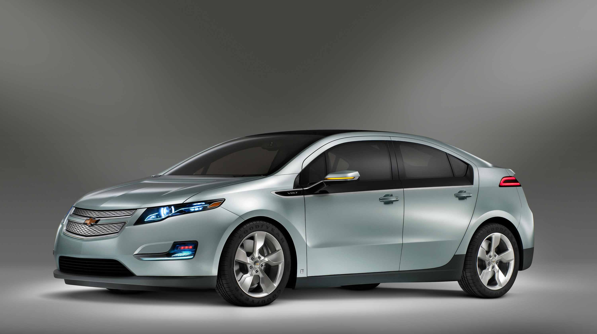
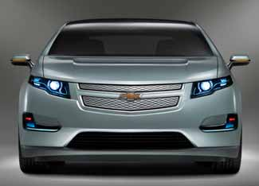
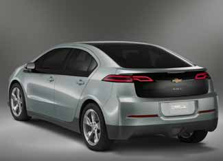
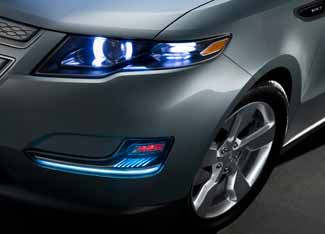
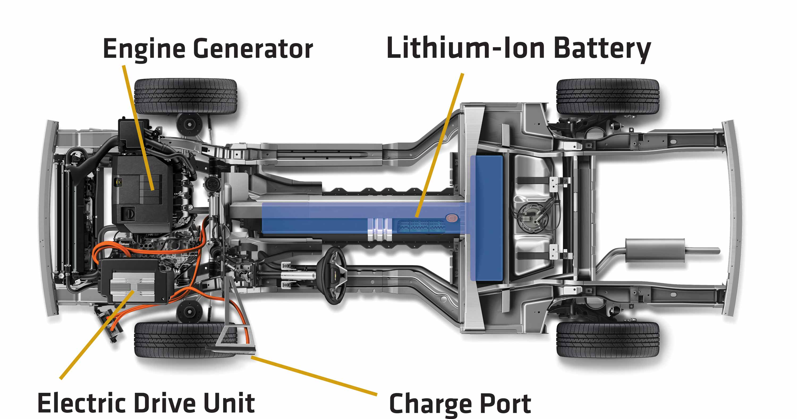
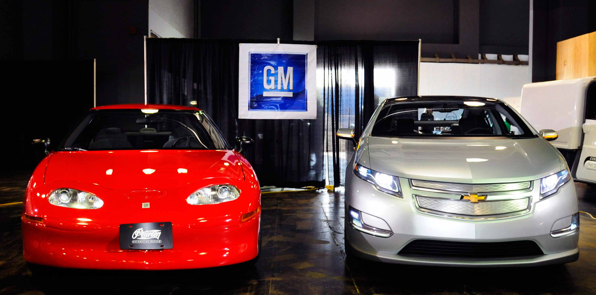

The Chevrolet Volt is perhaps the most highly anticipated car in recent history. It’s not quite an electric vehicle, a gasoline-electric hybrid or a plug-in hybrid, but has characteristics of all three. What’s easier to say is this car, assuming it comes to fruition, could be a game changer - not only for the parent company General Motors and the rest of the auto industry, but also for everything we know about “green” transportation.
The Volt’s groundbreaking design has both an internal combustion engine and an electric motor. But gasoline does not propel the car - electricity is the sole means by which the Volt moves. The gasoline engine acts as a range extender, generating electricity to recharge the lithium-ion batteries when they run low.
Because the gasoline engine doesn’t directly power the car as it would in a more typical hybrid, such as the Toyota Prius, it is relatively small (1.4 liter 4-cylinder) and is designed to run at an optimum efficiency for the single purpose of generating electricity.
The Volt uses a clever structure GM calls E-Flex, which allows the basic Volt design to be adapted for specific markets around the world. In Europe, for example, a small diesel engine will likely replace the gasoline engine for the range extender. GM has also shown a version of the Volt with a hydrogen fuel cell stack in lieu of the gas engine.
One of the primary goals for the Volt is to enable it to operate for 40 miles strictly as an electric vehicle, without assistance from the range extender. Forty miles, GM says, is enough to cover normal daily commutes and driving. If that’s true for you, you wouldn’t use a drop of gasoline to get around town. Beyond 40 miles, your fuel economy would be about 50 miles per gallon for each additional mile driven. So if you drive 90 miles total with the range extender running for the last 50 miles, your fuel economy would be the equivalent of 90 mpg.
Exactly how much total range the Volt will have is unknown at this time, but expect about 400 (40 miles of battery-only operation; 360 more with the assistance of the range extender). A larger fuel tank could add more range, but GM thinks the current plan for 7-gallon tank provides the best balance between additional weight and range.
When it’s time to recharge, a Volt driver simply plugs the car into a standard electrical outlet. A full charge will take six and a half hours, but that can be shortened to as little as three hours by recharging via a 220-volt outlet (like those for clothes dryers). If your employer’s parking lot, or wherever you park your Volt, has an accessible outlet, you could drive 80 miles every day with zero tailpipe emissions. As electric vehicles become more common in the coming years, charging stations will become more common at offices and parking garages.
The Volt’s lithium-ion battery pack runs down the center tunnel of the car and out to either side under the rear seat area, shaped like a “T.” This configuration is similar to what GM used for the lead-acid batteries that powered the EV1 electric car more than a decade ago. Although battery technology never seems to progress fast enough, the contrast between the EV1’s battery pack and that for the Volt is amazing. For example, the EV1’s batteries weighed over 1,200 pounds; the Volt’s weigh just 375 pounds.
Several suppliers have been vying for the Volt battery contract, with each new chemistry being put through rigorous durability and longevity testing. The Volt’s lithium-ion batteries won’t have the same thermal (read: fire) issues that have made news with laptop computer batteries. New battery chemistry, design, packaging, charging-discharge routines and separators within the cells all make the newest lithium-ion battery packs safer and more robust.
When the original concept for the Volt was unveiled in 2007, its looks captured the hearts and minds of car enthusiasts and environmentalists alike. Some even referred to the Volt as an “electric Camaro.” Concept cars, however, don’t spend time in the wind tunnel, and the original design quickly proved to have the aerodynamics of a brick. The actual Volt we’ll see in showrooms and on the road (in late 2010 as a 2011 model) looks more like the family-friendly Chevrolet Malibu sedan than the hot-rod Camaro, but it still has a unique, futuristic character (there are several photos in the Image Gallery).
GM has yet to announce pricing for the Volt, but sources say it will be in the mid-to-upper $30,000 range. That price tag may come down if there are battery technology breakthroughs and with expanded production. Buyers may also be eligible for substantial tax credits, depending on future legislation from Congress.
When the rubber hits the road, though, your actual operating costs would be quite low. GM estimates that at current energy costs, the Volt will cover a mile for about 2 cents in pure electric mode. With the range-extending gas engine running, expect costs of about 10 to 12 cents per mile. To put that in perspective, a daily charge will use less electricity over the course of a year than the average household refrigerator. If that charge comes from solar, wind or other renewable energy sources, we can move that much closer to truly going “green.”
For more information about the Volt:
The Volt: An Electric Car That Could Change Everything
GM Volt (news and information about the car; not affiliated with GM)
|
 GENERAL MOTORS It's an electric car. It's a hybrid. It's a plug-in hybrid. It's all of that and more, taking the best features of each. The Volt will hit the streets in late 2010. |
 GENERAL MOTORS The Volt will hit the streets in late 2010. |
 GENERAL MOTORS The power anatomy of the Volt. |
|
 GENERAL MOTORS GM may have "killed" its original electric car, the EV1 (left), but a great deal of the learning from that experience has been applied to the Volt. |
 GENERAL MOTORS |
 GENERAL MOTORS |
|
 GENERAL MOTORS |
|
|